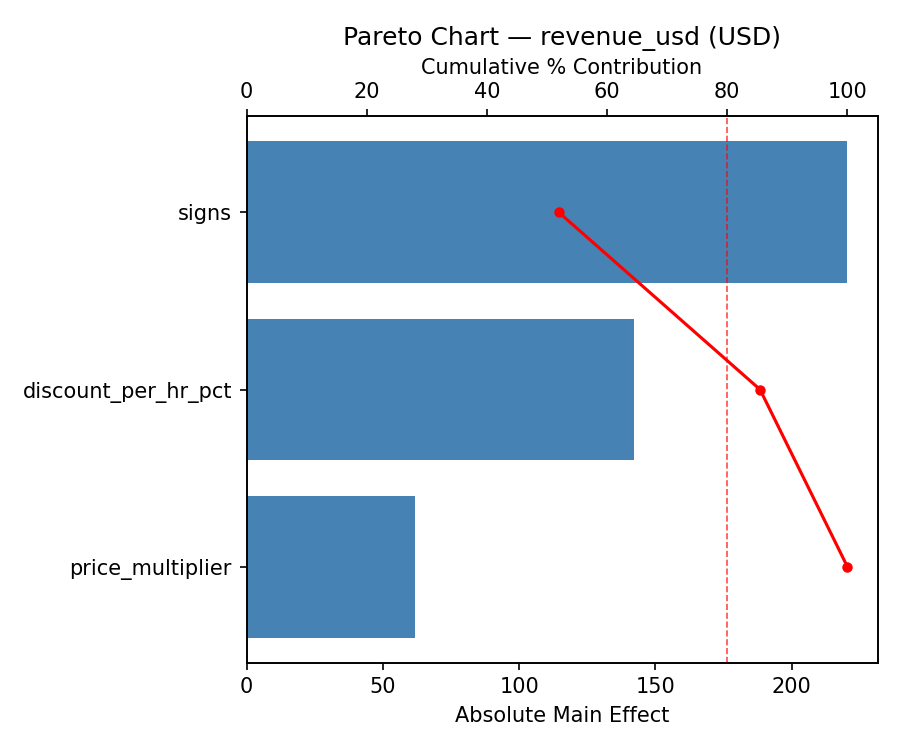
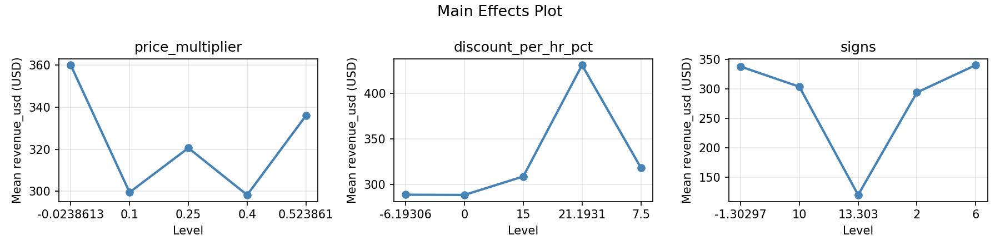
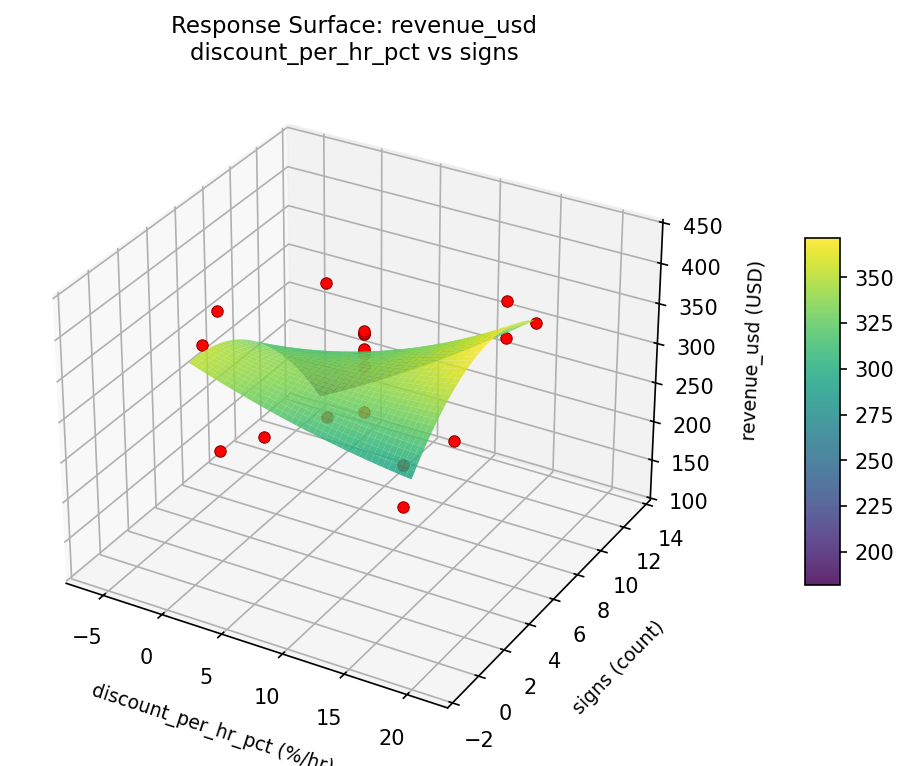
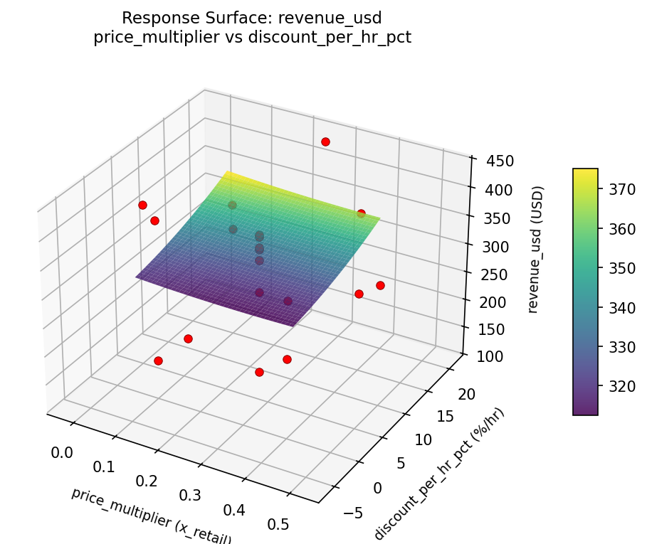
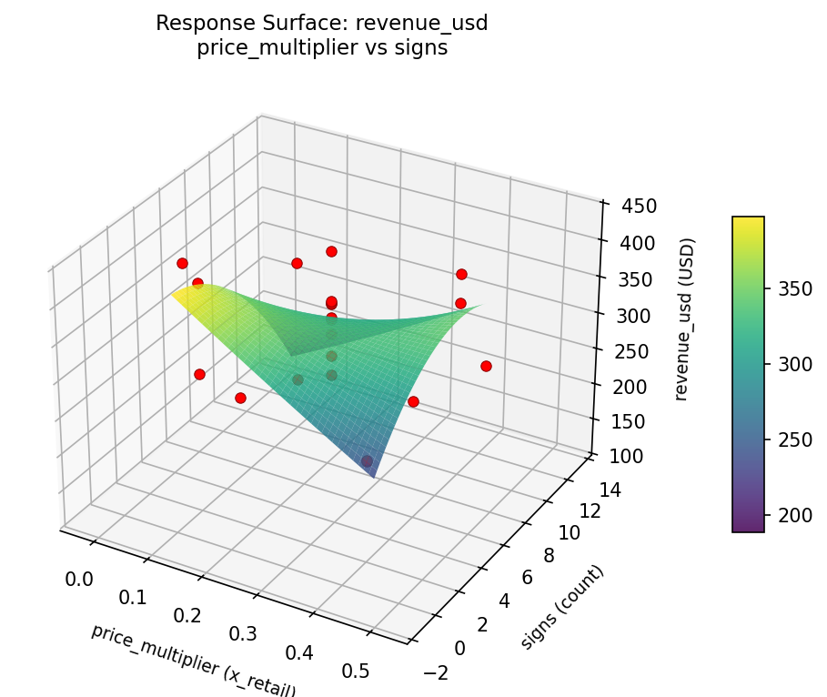
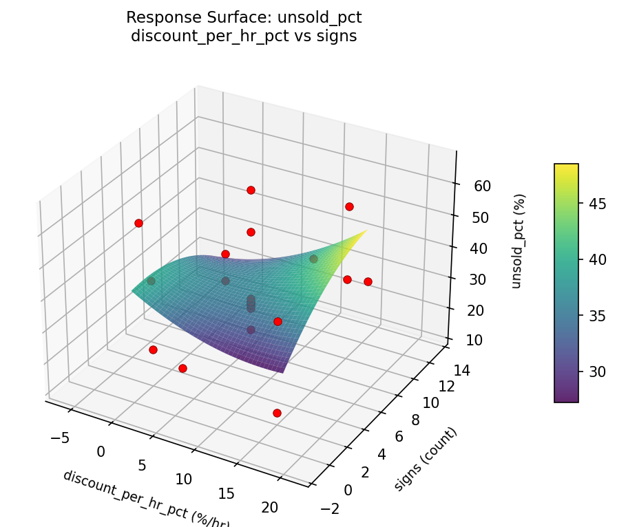
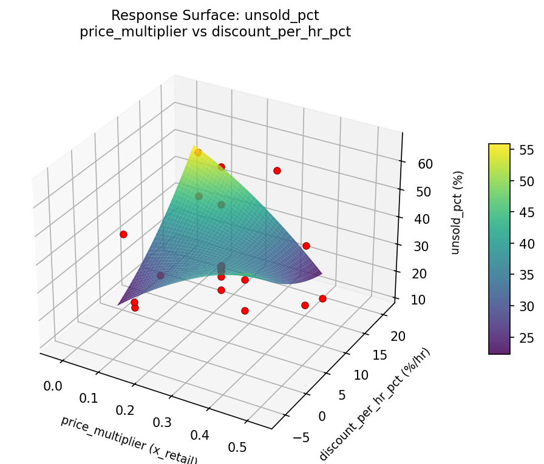

Summary
This experiment investigates garage sale pricing strategy. Central composite design to maximize total revenue and minimize unsold items by tuning starting price multiplier, discount schedule, and signage count.
The design varies 3 factors: price multiplier (x_retail), ranging from 0.1 to 0.4, discount per hr pct (%/hr), ranging from 0 to 15, and signs (count), ranging from 2 to 10. The goal is to optimize 2 responses: revenue usd (USD) (maximize) and unsold pct (%) (minimize). Fixed conditions held constant across all runs include duration = 6hrs, items = 200.
A Central Composite Design (CCD) was selected to fit a full quadratic response surface model, including curvature and interaction effects. With 3 factors this produces 22 runs including center points and axial (star) points that extend beyond the factorial range.
Quadratic response surface models were fitted to capture potential curvature and factor interactions. The RSM contour plots below visualize how pairs of factors jointly affect each response.
Key Findings
For revenue usd, the most influential factors were signs (51.9%), discount per hr pct (33.5%), price multiplier (14.5%). The best observed value was 431.0 (at price multiplier = 0.25, discount per hr pct = 7.5, signs = 6).
For unsold pct, the most influential factors were discount per hr pct (52.3%), signs (28.3%), price multiplier (19.5%). The best observed value was 12.0 (at price multiplier = 0.4, discount per hr pct = 0, signs = 10).
Recommended Next Steps
- Run confirmation experiments at the predicted optimal settings to validate the model.
- Consider whether any fixed factors should be varied in a future study.
Experimental Setup
Factors
| Factor | Low | High | Unit |
|---|
price_multiplier | 0.1 | 0.4 | x_retail |
discount_per_hr_pct | 0 | 15 | %/hr |
signs | 2 | 10 | count |
Fixed: duration = 6hrs, items = 200
Responses
| Response | Direction | Unit |
|---|
revenue_usd | ↑ maximize | USD |
unsold_pct | ↓ minimize | % |
Configuration
{
"metadata": {
"name": "Garage Sale Pricing Strategy",
"description": "Central composite design to maximize total revenue and minimize unsold items by tuning starting price multiplier, discount schedule, and signage count"
},
"factors": [
{
"name": "price_multiplier",
"levels": [
"0.1",
"0.4"
],
"type": "continuous",
"unit": "x_retail"
},
{
"name": "discount_per_hr_pct",
"levels": [
"0",
"15"
],
"type": "continuous",
"unit": "%/hr"
},
{
"name": "signs",
"levels": [
"2",
"10"
],
"type": "continuous",
"unit": "count"
}
],
"fixed_factors": {
"duration": "6hrs",
"items": "200"
},
"responses": [
{
"name": "revenue_usd",
"optimize": "maximize",
"unit": "USD"
},
{
"name": "unsold_pct",
"optimize": "minimize",
"unit": "%"
}
],
"settings": {
"operation": "central_composite",
"test_script": "use_cases/250_garage_sale_pricing/sim.sh"
}
}
Experimental Matrix
The Central Composite Design produces 22 runs. Each row is one experiment with specific factor settings.
| Run | price_multiplier | discount_per_hr_pct | signs |
|---|
| 1 | 0.25 | 7.5 | 6 |
| 2 | 0.4 | 0 | 10 |
| 3 | 0.1 | 15 | 2 |
| 4 | 0.25 | 21.1931 | 6 |
| 5 | 0.25 | 7.5 | 6 |
| 6 | -0.0238613 | 7.5 | 6 |
| 7 | 0.25 | 7.5 | -1.30297 |
| 8 | 0.25 | 7.5 | 6 |
| 9 | 0.4 | 15 | 2 |
| 10 | 0.523861 | 7.5 | 6 |
| 11 | 0.25 | 7.5 | 6 |
| 12 | 0.25 | -6.19306 | 6 |
| 13 | 0.25 | 7.5 | 6 |
| 14 | 0.1 | 0 | 10 |
| 15 | 0.25 | 7.5 | 6 |
| 16 | 0.4 | 0 | 2 |
| 17 | 0.25 | 7.5 | 13.303 |
| 18 | 0.4 | 15 | 10 |
| 19 | 0.25 | 7.5 | 6 |
| 20 | 0.1 | 0 | 2 |
| 21 | 0.1 | 15 | 10 |
| 22 | 0.25 | 7.5 | 6 |
Step-by-Step Workflow
1
Preview the design
$ python doe.py info --config use_cases/250_garage_sale_pricing/config.json
2
Generate the runner script
$ python doe.py generate --config use_cases/250_garage_sale_pricing/config.json \
--output use_cases/250_garage_sale_pricing/results/run.sh --seed 42
3
Execute the experiments
$ bash use_cases/250_garage_sale_pricing/results/run.sh
4
Analyze results
$ python doe.py analyze --config use_cases/250_garage_sale_pricing/config.json
5
Get optimization recommendations
$ python doe.py optimize --config use_cases/250_garage_sale_pricing/config.json
6
Generate the HTML report
$ python doe.py report --config use_cases/250_garage_sale_pricing/config.json \
--output use_cases/250_garage_sale_pricing/results/report.html
Features Exercised
| Feature | Value |
|---|
| Design type | central_composite |
| Factor types | continuous (all 3) |
| Arg style | double-dash |
| Responses | 2 (revenue_usd ↑, unsold_pct ↓) |
| Total runs | 22 |
Analysis Results
Generated from actual experiment runs using the DOE Helper Tool.
Response: revenue_usd
Top factors: signs (51.9%), discount_per_hr_pct (33.5%), price_multiplier (14.5%).
Pareto Chart

Main Effects Plot

Response: unsold_pct
Top factors: discount_per_hr_pct (52.3%), signs (28.3%), price_multiplier (19.5%).
Pareto Chart

Main Effects Plot

Response Surface Plots
3D surfaces fitted with quadratic RSM. Red dots are observed data points.
revenue usd discount per hr pct vs signs

revenue usd price multiplier vs discount per hr pct

revenue usd price multiplier vs signs

unsold pct discount per hr pct vs signs

unsold pct price multiplier vs discount per hr pct

unsold pct price multiplier vs signs

Full Analysis Output
RSM surface: rsm_revenue_usd_price_multiplier_vs_discount_per_hr_pct.png
RSM surface: rsm_revenue_usd_price_multiplier_vs_signs.png
RSM surface: rsm_revenue_usd_discount_per_hr_pct_vs_signs.png
RSM surface: rsm_unsold_pct_price_multiplier_vs_discount_per_hr_pct.png
RSM surface: rsm_unsold_pct_price_multiplier_vs_signs.png
RSM surface: rsm_unsold_pct_discount_per_hr_pct_vs_signs.png
=== Main Effects: revenue_usd ===
Factor Effect Std Error % Contribution
--------------------------------------------------------------
signs 220.4167 15.7455 51.9%
discount_per_hr_pct 142.2500 15.7455 33.5%
price_multiplier 61.7500 15.7455 14.5%
=== Summary Statistics: revenue_usd ===
price_multiplier:
Level N Mean Std Min Max
------------------------------------------------------------
-0.0238613 1 360.0000 0.0000 360.0000 360.0000
0.1 4 299.5000 102.3409 166.0000 411.0000
0.25 12 320.5833 75.6264 120.0000 431.0000
0.4 4 298.2500 71.3740 237.0000 378.0000
0.523861 1 336.0000 0.0000 336.0000 336.0000
discount_per_hr_pct:
Level N Mean Std Min Max
------------------------------------------------------------
-6.19306 1 289.0000 0.0000 289.0000 289.0000
0 4 288.7500 108.0320 166.0000 411.0000
15 4 309.0000 60.2052 237.0000 378.0000
21.1931 1 431.0000 0.0000 431.0000 431.0000
7.5 12 318.5833 68.4018 120.0000 364.0000
signs:
Level N Mean Std Min Max
------------------------------------------------------------
-1.30297 1 338.0000 0.0000 338.0000 338.0000
10 4 303.7500 94.0368 166.0000 378.0000
13.303 1 120.0000 0.0000 120.0000 120.0000
2 4 294.0000 81.6252 237.0000 411.0000
6 12 340.4167 42.0464 263.0000 431.0000
=== Main Effects: unsold_pct ===
Factor Effect Std Error % Contribution
--------------------------------------------------------------
discount_per_hr_pct 19.2500 2.7502 52.3%
signs 10.4167 2.7502 28.3%
price_multiplier 7.1667 2.7502 19.5%
=== Summary Statistics: unsold_pct ===
price_multiplier:
Level N Mean Std Min Max
------------------------------------------------------------
-0.0238613 1 32.0000 0.0000 32.0000 32.0000
0.1 4 35.0000 17.4547 20.0000 57.0000
0.25 12 36.9167 13.1734 22.0000 66.0000
0.4 4 29.7500 12.7115 12.0000 42.0000
0.523861 1 30.0000 0.0000 30.0000 30.0000
discount_per_hr_pct:
Level N Mean Std Min Max
------------------------------------------------------------
-6.19306 1 46.0000 0.0000 46.0000 46.0000
0 4 28.7500 10.0457 20.0000 42.0000
15 4 36.0000 18.6726 12.0000 57.0000
21.1931 1 48.0000 0.0000 48.0000 48.0000
7.5 12 34.2500 12.3959 22.0000 66.0000
signs:
Level N Mean Std Min Max
------------------------------------------------------------
-1.30297 1 29.0000 0.0000 29.0000 29.0000
10 4 36.0000 14.8997 22.0000 57.0000
13.303 1 27.0000 0.0000 27.0000 27.0000
2 4 28.7500 15.0859 12.0000 42.0000
6 12 37.4167 12.8520 22.0000 66.0000
Pareto chart (revenue_usd): use_cases/250_garage_sale_pricing/results/analysis/pareto_revenue_usd.png
Pareto chart (unsold_pct): use_cases/250_garage_sale_pricing/results/analysis/pareto_unsold_pct.png
Main effects (revenue_usd): use_cases/250_garage_sale_pricing/results/analysis/main_effects_revenue_usd.png
Main effects (unsold_pct): use_cases/250_garage_sale_pricing/results/analysis/main_effects_unsold_pct.png
Optimization Recommendations
=== Optimization: revenue_usd ===
Direction: maximize
Best observed run: #2
price_multiplier = 0.25
discount_per_hr_pct = 7.5
signs = 6
Value: 431.0
RSM Model (linear, R² = 0.1609, Adj R² = 0.0210):
Coefficients:
intercept +315.1818
price_multiplier +32.1139
discount_per_hr_pct +0.4262
signs -14.9953
RSM Model (quadratic, R² = 0.3543, Adj R² = -0.1300):
Coefficients:
intercept +322.1161
price_multiplier +32.1139
discount_per_hr_pct +0.4262
signs -14.9953
price_multiplier*discount_per_hr_pct +14.8750
price_multiplier*signs -38.3750
discount_per_hr_pct*signs -8.3750
price_multiplier^2 -16.8671
discount_per_hr_pct^2 -2.4672
signs^2 +8.9328
Curvature analysis:
price_multiplier coef=-16.8671 concave (has a maximum)
signs coef=+8.9328 convex (has a minimum)
discount_per_hr_pct coef=-2.4672 concave (has a maximum)
Notable interactions:
price_multiplier*signs coef=-38.3750 (antagonistic)
price_multiplier*discount_per_hr_pct coef=+14.8750 (synergistic)
discount_per_hr_pct*signs coef=-8.3750 (antagonistic)
Predicted optimum (from linear model):
price_multiplier = 0.523861
discount_per_hr_pct = 7.5
signs = 6
Predicted value: 373.8135
Model quality: Weak fit — consider adding center points or using a different design.
Factor importance:
1. price_multiplier (effect: 241.0, contribution: 55.6%)
2. discount_per_hr_pct (effect: 117.2, contribution: 27.1%)
3. signs (effect: 75.0, contribution: 17.3%)
=== Optimization: unsold_pct ===
Direction: minimize
Best observed run: #21
price_multiplier = 0.4
discount_per_hr_pct = 0
signs = 10
Value: 12.0
RSM Model (linear, R² = 0.0382, Adj R² = -0.1221):
Coefficients:
intercept +34.7273
price_multiplier -1.1829
discount_per_hr_pct +2.3683
signs +1.4494
RSM Model (quadratic, R² = 0.3934, Adj R² = -0.0616):
Coefficients:
intercept +43.8720
price_multiplier -1.1829
discount_per_hr_pct +2.3683
signs +1.4494
price_multiplier*discount_per_hr_pct +0.3750
price_multiplier*signs -2.6250
discount_per_hr_pct*signs +2.3750
price_multiplier^2 -6.1224
discount_per_hr_pct^2 -3.8724
signs^2 -3.7223
Curvature analysis:
price_multiplier coef=-6.1224 concave (has a maximum)
discount_per_hr_pct coef=-3.8724 concave (has a maximum)
signs coef=-3.7223 concave (has a maximum)
Notable interactions:
price_multiplier*signs coef=-2.6250 (antagonistic)
discount_per_hr_pct*signs coef=+2.3750 (synergistic)
price_multiplier*discount_per_hr_pct coef=+0.3750 (synergistic)
Predicted optimum (from quadratic model):
price_multiplier = 0.25
discount_per_hr_pct = 7.5
signs = 6
Predicted value: 43.8720
Model quality: Weak fit — consider adding center points or using a different design.
Factor importance:
1. price_multiplier (effect: 17.7, contribution: 35.6%)
2. discount_per_hr_pct (effect: 17.0, contribution: 34.2%)
3. signs (effect: 15.0, contribution: 30.2%)